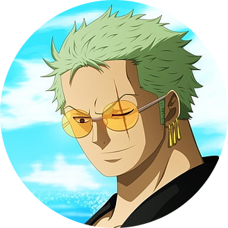

|
Straw Hats Pirates
in
One Piece
|
|
One piece
Now One piece is one of the top Shonen anime's and by far the best I have ever seen in my life. Basically the story of this anime revolves around a kid "Monkey D. Luffy" who has extra ordinary abilities and wants to become "The King of Pirates".
Along in his journey there are so many adventures that anyone can ever imagine, and along these adventures he keeps making friends and enemies.
Captain and his first crew member
The most important thing that "The King of Pirates" will need is the strongest crew of them all. So Luffy as trying to be a captain starts to look for strong members of the crew and that is where he runs into and saves my favorite character of One Piece "Zoro".He was about to get executed by a corrupt officer of navy but then he is saved by luffy. The best part that I love about zoro is that he uses three swords in a battle. One in his right hand, one in his left hand and the last one is held side ways between his teeths, in his mouth.
Crew
Captain
- The captain of the Straw hats is Monkey D. Luffy . He is a very simple-minded boy. His ambition is to become "The King of Pirates". He ate a devil fruit called "Gum-Gum Fruit". Other than his crazy sense for adventure, love and care for his friends and crew, he is totally no captain material.

Vice Captain
- Zoro is the vice captain of Straw hats pirates. His ambition and dream is to become world's strongest swordsman.

Navigator
- Nami is the navigator of Straw hats pirates. Ambitious woman, her dream is uncertain but she sure loves berries ฿ (Currency in one piece) a lot more then anybody.
Cook
- Vinsmoke Sanji is the Cook of Straw hats pirates. He is the greatest pervert I have ever seen in my life but is also the greatest gentleman I have ever seen in my life. His Dream is to Find "All Blue" . It is the Ocean which contains all the sea creatures in itself. To most people it is just a story and a dream that can never be true but Sanji is sure of it.
Doctor
- Chopper is the doctor of the Straw hats pirates. He is a raindeer that can talk. the reason behind this is that he ate a devil fruit named "Human-Human Fruit" .
Sniper
- Usopp is the sniper of the Straw hats crew. But he also the greatest liar anyone can ever meet in his life. He is also a cowardly person but when it comes to his friends or his own pride he can surprise almost anyone.
Archaeologist
- Nico Robin is the archaeologist of the Straw hats pirates. She is the only person alive who knows how to read "poneglyphs" . Reading poneglyphs is the gretest crime in the world because it threatens the World government that is why nico robin is a wanted person by navy and world government. Her powers are that she also ate a devil fruit called "Flower-Flower Fruit".Other than that she is the most humble, heart-warming and most sexy woman that I had seen in One Piece.
Shipwright
- Franky is the Shipwright of the Straw hats pirates. He replaced his all body parts with machinary. So he basically turned himself into a Robot. He is a very cool and Quirky guy and everyobody loves his new inventions.
Musician
- Brook is the musician of the Straw hats pirates. Basically he is a skeleton . He ate a devil fruit with which he can fight using ice. He is around a hundred years old. He is on the journey with luffy to help him become the king of pirates and later on he has to meet an old friend from which he was separated many years ago.
Warlords of the sea's
There are 7 warlords o the sea's. Technically they are high bounty and power holding pirates but they are not wanted because the system of warlords is under the Navy and World Government .
- Dracule "Hawk-Eye" Mihawk. (The strongest swordsman in the world)
- "The Tyrant" Bartholomew Kuma. (He is an undercover agent from the rebellion army led by Luffy's father,"Monkey D. Dragon")
- Boa Hancock the Pirate Empress. (The most beautiful person in the whole world)
- Sir Crocodile. (sandman)
- Gecko Moria. (King of soul's)
- "First Son of the Sea" Jimbei. (Later on the joins the straw hats pirates)
- "Heavenly Yaksha" Donquiotxte Doflamingo.
4 Yonko
The 4 Yonko are the 4 Emperors of the seas. The are extremely wanted by the navy. The are the top one's in bounty and powers in the wanted list of the Navy.
- "Red haired Pirates" Shanks. (He is the one who encouraged luffy to become the king of pirates. Luffy think of him as a very good friend and looks upto him. He is the one who entrusted his own straw hat to luffy until luffy becomes the king of pirates.)
- Charlotte Linlin "Big Mom".
- Edward Newgate "Whitebeard". (He was considered the strongest person in the whole world)
- Kaido "Beast Pirates". (There is a saying in one piece about kaido,"If it's one on one, Kaido will win")
| Dark-blue |
Red |
Dark-blue are historical poneglyphs. They tell the truth about the Navy and the World Government of how it was founded because that is totally unknown to everyone and the government does not want anyone to know the truth about it. Thats why if anyone tries to read or study a poneglyph then he/she is executed and that's why Nico Robin is on wanted list since she was nine because she is the only one who can read poneglyphs and expose the Government. |
Red poneglyphs are the rarest ones there are only four of them. Reading and deciphering them will tell yo the location of the last island Laugh Tale. |
Favorite Devil Fruits
| Name |
Stars |
| Mera Mera no Mi (Ace) |
★★★★★ |
| Tori Tori no Mi (Marco) |
★★★★★ |
| Uo Uo no Mi (Kaido) |
★★★★☆ |
| Gura Gura no Mi (Whitebeard) |
★★★★☆ |